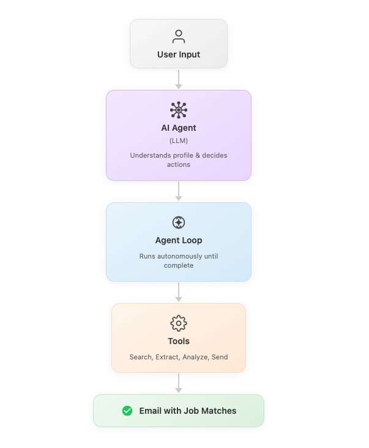
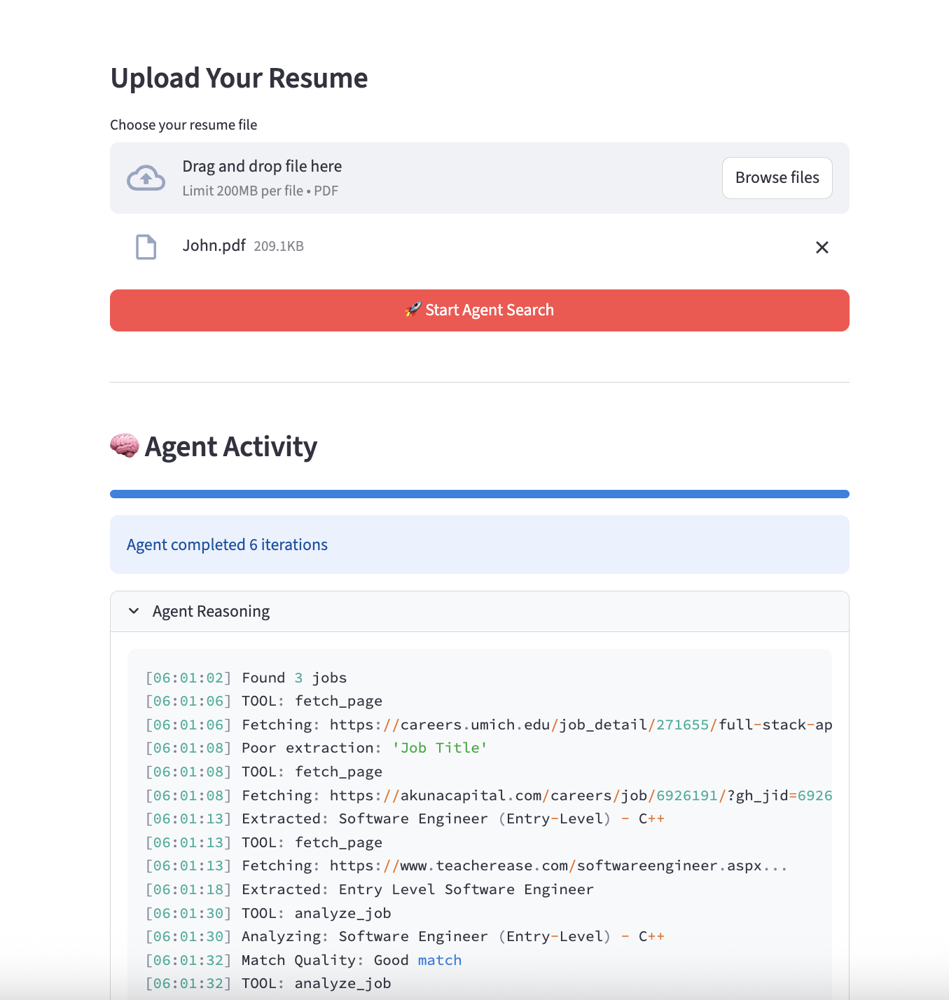

Autonomous AI Agent
for Job Search
A multi-step agentic system that searches job boards, scrapes and analyses listings, evaluates candidate fit, and sends personalised summaries , end-to-end, without human input. Built to understand what real agentic autonomy looks like in practice.


Job search is broken by repetition
Job seekers spend hours each week on the same repetitive loop: search job boards, scan listings, assess fit, shortlist, apply, repeat. The process is high-effort, low-signal, and deeply manual.
The match quality is poor because humans anchor on keywords, not semantic fit. A job that’s 90% right but uses different terminology gets missed. A job that sounds right but doesn’t match the candidate’s actual experience gets applied to anyway.
The opportunity: an autonomous agent that understands the candidate at a semantic level and runs the search, evaluation, and alerting loop without human involvement.
Manual effort on low-value tasks
Searching and scanning are the least valuable parts of job hunting. Human time should go to applications and interviews , not curation.
Keyword matching misses semantic fit
Traditional search is keyword-based. Semantic matching understands what a candidate actually does, not just what words appear on their CV.
Multi-step autonomy, end to end
The agent runs a full job search workflow using OpenAI function calling with custom tools. At each step, it decides which tool to call, what parameters to pass, and when it has enough information to proceed or stop.
“The interesting product moment is when the agent decides to stop. Knowing when you have enough is as important as knowing how to search.”
What agentic systems actually require
Tool failures can’t crash the workflow
Web scraping fails. APIs time out. The agent needs graceful degradation , skip the broken listing, log the failure, continue with others. This is product design, not just engineering.
Preventing infinite iteration is non-trivial
Agents can get stuck refining and re-searching. Explicit stopping conditions , max iterations, confidence thresholds, result counts , are required by design.
- Transparency is a product requirement: The Streamlit UI shows real-time tool calls and reasoning logs. Users need to see what the agent is doing , especially when it decides something unexpected.
- Autonomy and control are in tension: A fully autonomous agent that does unexpected things destroys trust. The right product balance is autonomy within clearly communicated scope.
- Context window management is a PM problem: A long job search workflow generates a lot of context. What to keep, summarise, or drop affects match quality and cost.
- MCP changes the integration model: Model Context Protocol enables standardised tool interfaces. Products built on MCP are more composable than custom function-calling implementations.